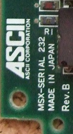
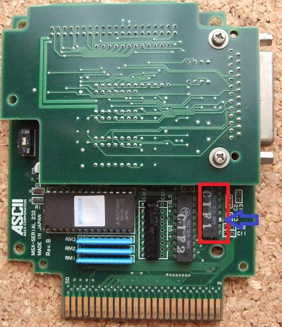
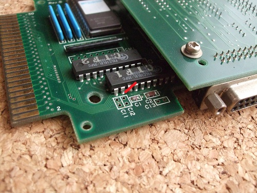
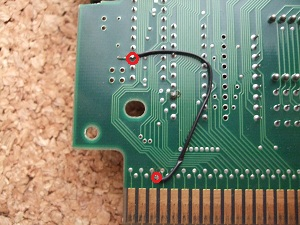
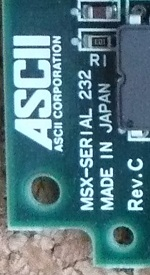
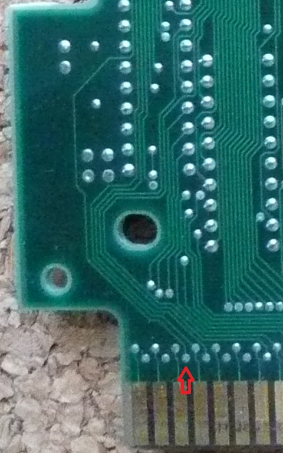

Serial232の秘密
Serial232はMSX衰退期にMSXユーザーをつなぐパソコン通信の重要アイテムでした。発売は1990年1月頃でMSX2+の時代のため、古いロットのSerial232ではMSX turboRとの組み合わせで処理落ちが発生するようです。そのため、問い合わせベースでアスキーが改修を行っていたという噂があります。Rev.B基板が改修の対象であることはわかっていますが、Rev.Aがあるのかは不明です。

改修方法は簡単です。
1. CIF1と記載されたICの13番ピンをカットし、基板から切り離す。


2. CIF1と記載されたICの13番ピンの基板側とスロットの6番ピン（/RFRS）をつなぐ。（CIF1と記載されたICの13番ピンは基板から切り離され、どこにもつながっていない状態になります。）

Rev.Cの基板ではこの問題は修正されており、改修の必要は無いようです。スロットの6番ピンから配線が出ているのが分かります。


元ネタとして参考にさせて頂いたななこっち★様こと(YMD)A様、(YMD)A様にご協力頂いたMARIO-NETのシスオペ [MARIO] 様、EquaトNetのシスオペ ゆーた様に感謝いたします。
お約束ですが、この噂を見て改造などを行い故障やその他問題が発生しても責任は負えません。各自の責任において情報を広く集めて行うことをおすすめします。